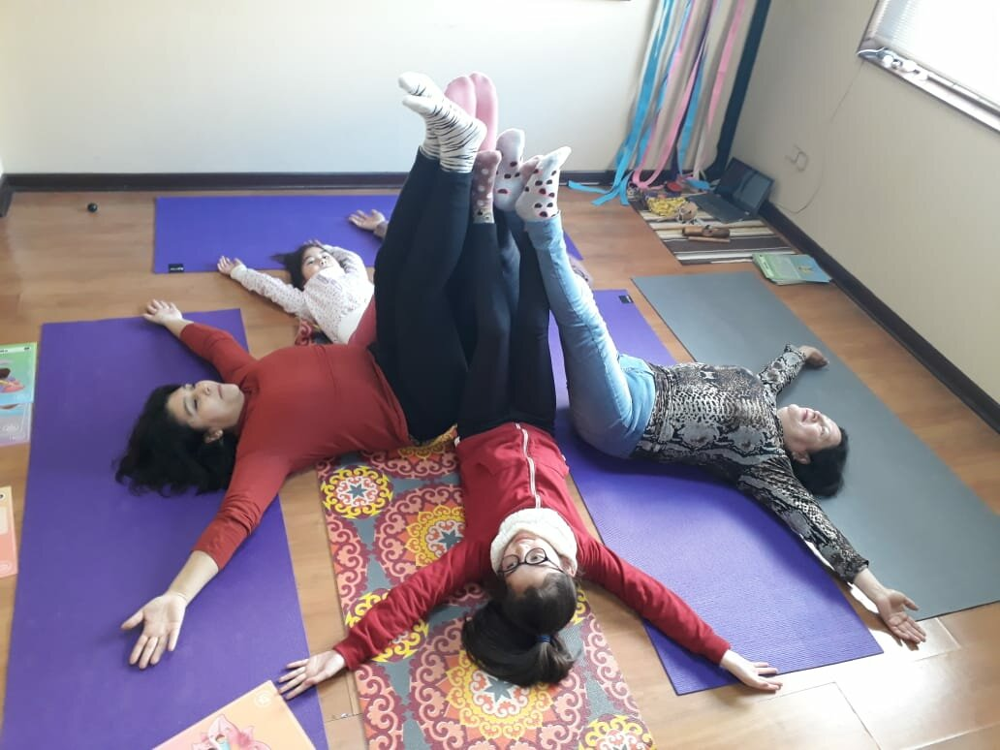

El Yoga es una disciplina que se originó en la India alrededor de 5,000 años atrás, como un conjunto de técnicas de concentración practicadas para conseguir un mayor control físico y mental.
Con diferentes posturas físicas y técnicas de respiración, se logra mejorar el sueño, reducir el estrés y la ansiedad, aumentar la flexibilidad muscular y articular, favorecer la agilidad física, mejorar los hábitos de postura, la concentración, el equilibrio, la coordinación, fortalecer el organismo y huesos, de una manera segura y controlada.
Por estas razones la práctica regular del Yoga en el crecimiento de los niños mejora la salud física y mental de una forma divertida.
Los niños son vitales para la sociedad de hoy y del mañana. Hay evidencia creciente de que la salud durante la infancia prepara el escenario para la salud del adulto, no solo refuerza esta perspectiva, sino que también crea un importante imperativo ético, social y económico el asegurarse que todos los niños estén lo más saludables posible.
El Yoga es una herramienta les permite a los niños vivir un presente pleno para preparar un sano camino para el futuro, de adultos conscientes y fuertes.
Algunas de las posturas que son muy beneficiosas para la salud son el Árbol, el Guerrero, la Cobra y el Gato.
Actividad:
Los niños pueden practicar jugando! Un ejemplo es el juego del “congelado”. Todos empiezan alineados cerca de alguna pared y luego caminando rumbo a la otra cuando se dice: uno…dos… tres… “árbol”…. Allí todos tienen que quedarse quietos por algunos segundos haciendo la postura de Yoga indicada. El que llegue antes a la pared es quien podrá realizar las indicaciones en la próxima ronda del juego.